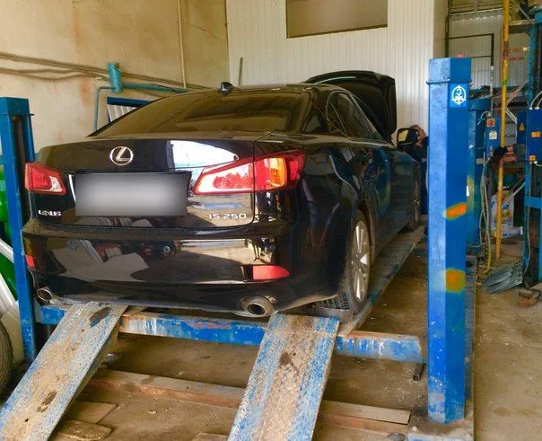
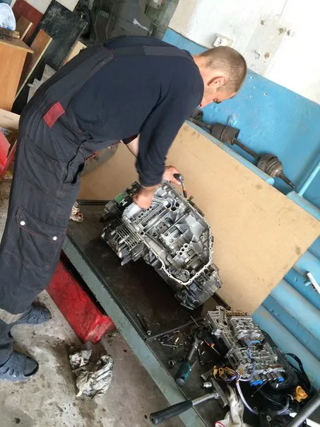
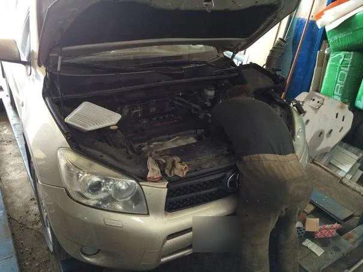

Автосервис в Тюмени
Лаборатория № 1
Найдём причину - устраним проблему
Ремонт АКПП · Ходовая · Шиномонтаж · Диагностика
- Рейтинг 4,8 на Яндекс Картах, 135 оценок
- Садовая, 31, Калининский округ
- Пн-сб 10:00-19:00, вс 11:00-17:00

Цены на работы
Точную сумму называем после диагностики, до начала ремонта. Прайс уточняется у владельца.
Ремонт
- Диагностикапоиск причины неисправностиуточнить
- Ремонт АКППкоробки автоматуточнить
- Ремонт ходовойподвескауточнить
Колёса
- Шиномонтажснять, поставить, балансировкауточнить
Запчасть под ремонт можем заказать сами – по отзывам клиентов. Цены на работы уточняйте по телефону.
Как мы работаем
- 01
Записались
Звоните или выберите время в форме выше.
- 02
Нашли причину
Объясняем, в чём дело, понятным языком.
- 03
Согласовали
Вы знаете, что и зачем делаем, до начала ремонта.
- 04
Отремонтировали
По отзывам клиентов, на работы дают гарантию – срок уточняйте при записи.


Отзывы с Яндекс.Карт
«Наконец-то нашла СТО, где действительно делают на совесть. Быстро починили, проблему устранили. Гарантию дали! А главное - объяснили в чем вообще дело понятным языком.»
Карина Е. · 6 февраля
«Обратился с проблемой уходил антифриз прям много и больно, машина редкая в 2 х других сервисах продинамили возились толку 0, по совету друзей заехал сюда - день/ночь все готово! Приняли быстро проблему решили оперативно, все рассказали. Теперь только сюда. Ценник супер адекватный. Рекомендую всем!»
Вячеслав · 6 февраля
«Отличное СТО. Обслуживаюсь более 5 лет. Отличный подход к каждому клиенту, доступно объясняют все, цены приемлимые по сравнению с другими СТО. Рекомендую данное СТО для обслуживание авто.»
Danil S. · 23 октября
«СТО супер, пользуюсь услугами парней давно. По мимо ремонта можно сделать шиномонтаж. На запчасти цены не завышают. Рекомендую»
Николай К. · 17 марта 2025
«Здесь работает и руководит всем процессом Николай - это самый честный автослесарь в мире! Все ребята лучшие мастера! Лет 15 уже делаем у них машины, все очень довольны! Респект и уважуха!»
Андрей Шнуров · 12 ноября 2024
Отзывы с карточки на Яндекс Картах, без правок. Все отзывы – на Яндекс Картах
Как добраться
Садовая ул., 31, Калининский округ, Тюмень. По данным Яндекс Карт, ближайшая остановка – «Пролетарский переулок», 196 м.
- Адрес
- Тюмень, Калининский округ, Садовая ул., 31
- Часы
- Пн-сб 10:00-19:00
Вс 11:00-17:00
Запишитесь на удобное время
- Адрес
- Калининский округ, Садовая ул., 31, Тюмень
- Часы
- Пн-сб 10:00-19:00, вс 11:00-17:00
- ВКонтакте
- vk.com/public151757173